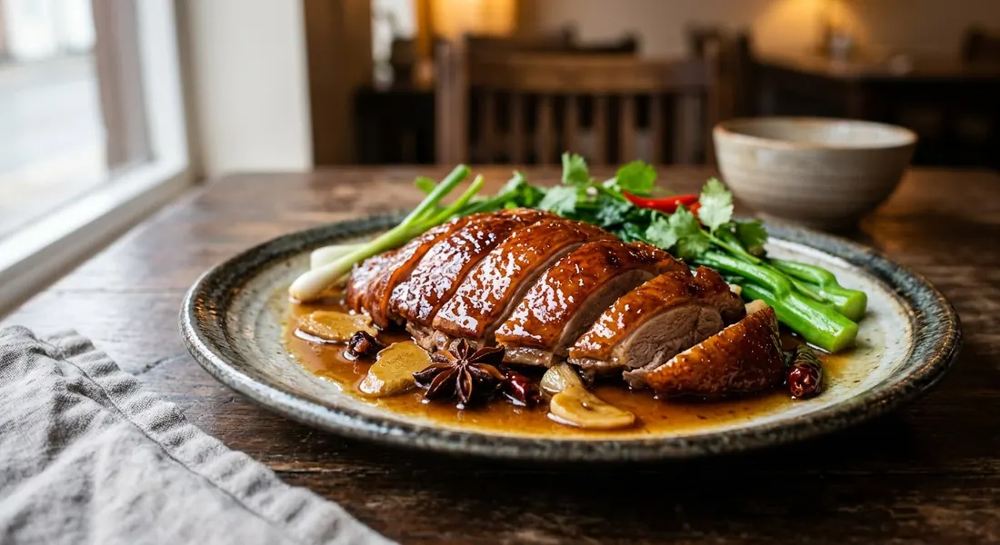

Honey roast duck — a whole duck marinated overnight in honey, ginger and star anise, then slow-roasted low and fast-finished high for crispy skin and tender, sweet-savoury meat.

เป็ดอบน้ำผึ้ง
Ped op nam pueng sits in the sweet-savoury corner of Thai-Chinese cooking — a whole duck steeped overnight in honey, soy, ginger and star anise, then roasted slowly until the fat melts away and the skin turns to lacquer. It appears on Thai menus as a special, often in the section next to the Peking duck it resembles.
The difference from Peking duck is the marinade: honey replaces the maltose glaze, and the duck is steeped in the seasoning rather than brushed with it, so the sweetness runs all the way through the meat. The result is less shatter-crisp and more deeply caramelised — closer to a Cantonese siu mei roast.
| Thai | English | Amount |
|---|---|---|
| เป็ด | Whole duck | 1 (about 2kg) |
| น้ำผึ้ง | Honey | 1.5 cups |
| ซีอิ๊วขาว | Light soy sauce | 1.5 cups |
| ขิง | Ginger | 6 slices |
| สามเกลอ | Garlic, pounded together | 3 tbsp |
| โป๊ยกั๊ก | Star anise | 4 flowers |
| ผงอบเชย | Cinnamon powder | 2 tsp |
| ผงพะโล้ | Five-spice powder | 1 tsp |
| น้ำมันหอย | Oyster sauce | 2 tbsp |
| พริกไทย | Black pepper | 2 tsp |
| น้ำสุก | Boiled water, as needed | 2 cups |
The recipe's two-stage roast does two jobs. The low stage (110°C) melts the fat under the skin and gently cooks the meat; the hot finish (150–160°C) crisps and colours the skin. Swap the order and you get either greasy skin or dry meat.
Twenty-four hours in the marinade is the minimum the recipe asks for, and it is not padding. Honey and soy need that long to carry flavour past the skin into the breast. The marinade then becomes the sauce — boiled, reduced, and poured over the carved duck.
This recipe is translated from the following Thai-language sources. Where they disagree, we've said so.
1. Cookpad — ped yang op nam pueng by PongKitchen — https://cookpad.com/th/recipes/13506186
2. Pantip — ped op nam pueng with orange sauce — https://pantip.com/topic/40605364/desktop